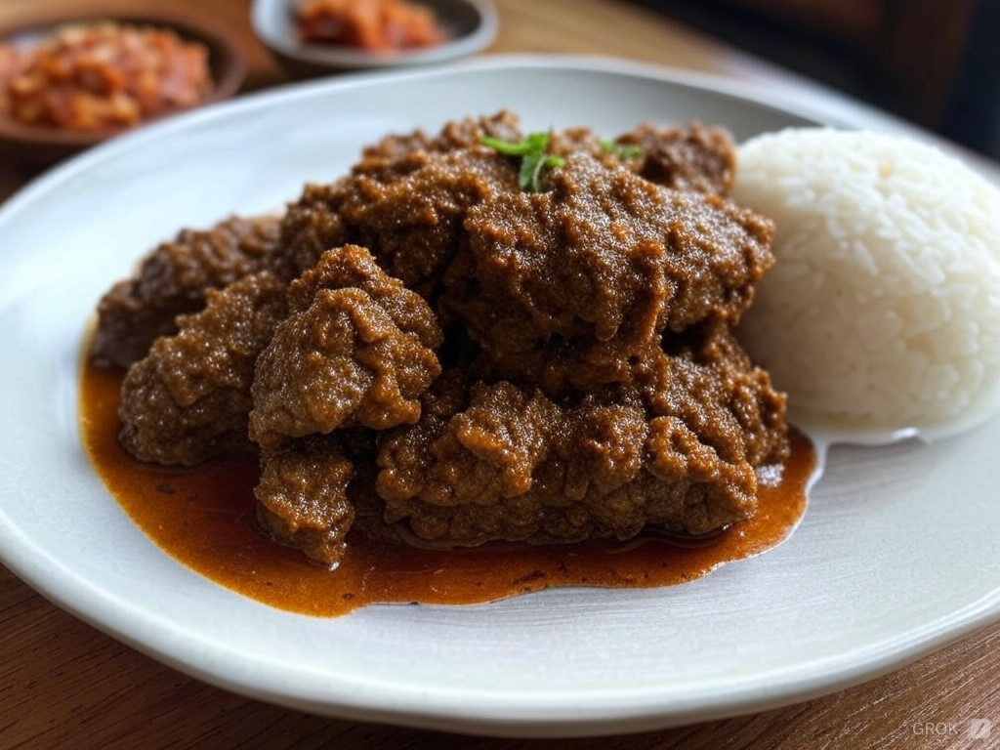

Chef John's Beef Rendang

An Indonesian curry classic
Easy to prepare yet full-flavoured, this addictive Asian dish will satisfy and impress.
Ingredients
- 2 ½ pounds beef chuck
- 4 shallots, sliced
- 6 cloves garlic
- 1 (1 1/2 inch) piece ginger, peeled and sliced
- 1 ½ inch piece galangal, peeled and sliced
- 2 serrano chile peppers - stemmed, seeded, and sliced
- 1 Fresno chile pepper - stemmed, seeded, and sliced
- 1 tablespoon Korean red pepper flakes
- 1 teaspoon ground coriander
- ½ teaspoon ground turmeric
- ⅛ teaspoon ground cardamom
- ⅛ teaspoon freshly grated nutmeg
- 2 tablespoons vegetable oil
- 1 (14 ounce) can full-fat coconut milk
- 2 teaspoons tamarind paste
- 1 tablespoon brown sugar
- ½ stalk lemongrass, light part
Steps
- Cut beef chuck into 2-inch pieces.
- Combine shallots, garlic, ginger, galangal, serrano and Fresno chiles, salt, red pepper flakes, coriander, turmeric, cardamom, and nutmeg in the bowl of a food processor. Pulse until paste is very finely ground, stopping occasionally to scrape down the sides with a spatula.
- Heat oil in a pan over medium heat. Add the curry paste. Cook and stir until it starts to dry out, then stir in the beef. Add coconut milk, tamarind paste, and brown sugar. Stir to combine. Fill up the empty can of coconut milk with water and pour it into the pan. Increase heat to medium-high; bring to a simmer.
- In the meantime, bruise lemongrass with the back of your knife. Cut into 1- to 2-inch pieces and add to the curry. Reduce heat to medium. Cook, uncovered, stirring occasionally, until beef is fork-tender and sauce is fully reduced, about 4 hours. Stir more frequently as water reduces; add more water or lower the heat if sauce is reducing faster than beef is softening.
- Remove lemongrass to serve. For best results, let cool and serve the next day.